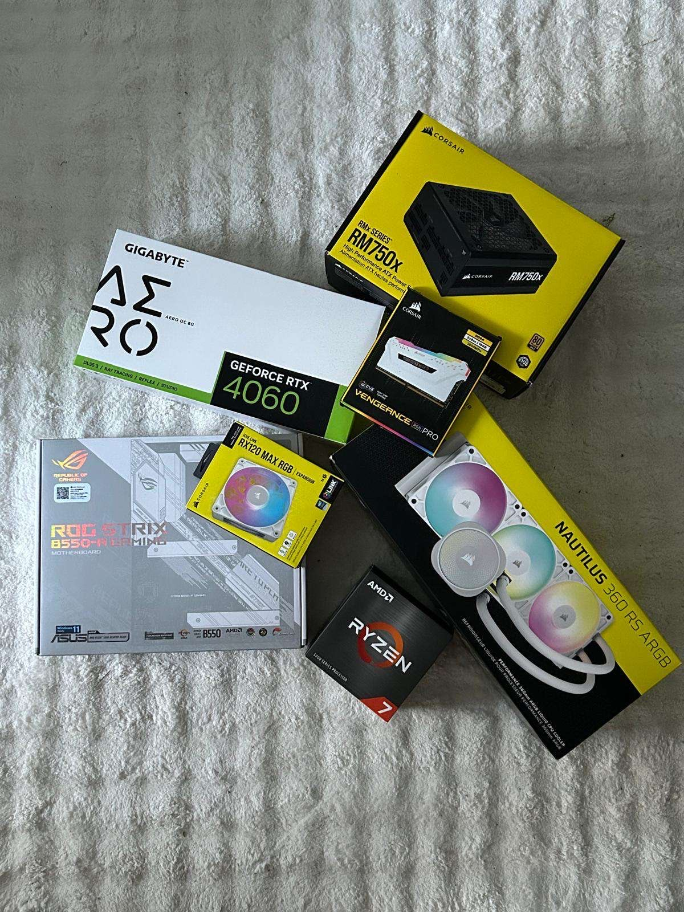
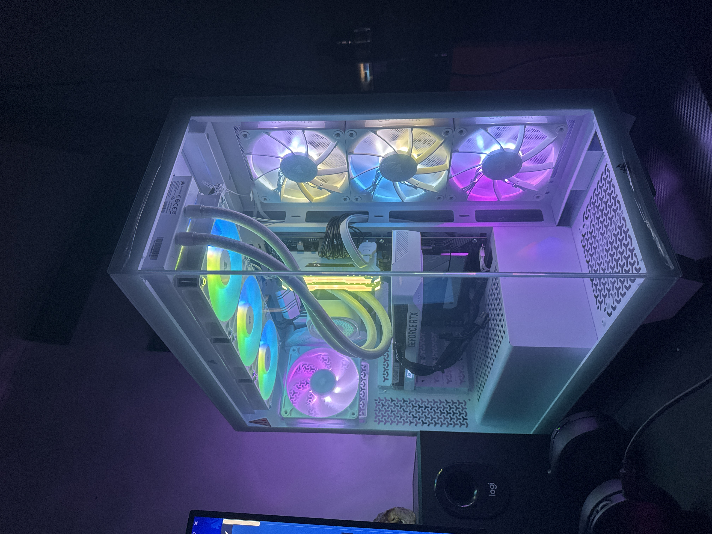

Projet – Assemblage d’un PC Gamer
Dans le cadre de mon portfolio personnel, j’ai réalisé un projet technique consistant à monter un ordinateur gamer sur mesure. L’objectif était de construire une machine performante, à la fois pour le jeu vidéo (notamment des titres gourmands comme Forza Horizon) et pour des tâches de création graphique comme le montage photo. Ce projet m’a permis de mettre en pratique mes compétences en informatique, notamment dans le choix des composants, l’assemblage matériel, la gestion des performances, et le refroidissement.
🔍 Phase de recherche – Choix des composants
Avant de procéder à l’assemblage, j’ai mené une phase de recherche approfondie pour identifier les composants les plus adaptés à mes besoins. Mon objectif était de trouver un bon équilibre entre puissance, compatibilité et budget, tout en assurant une évolutivité pour les années à venir.
Avant d’installer l’OS, il faut configurer le BIOS pour reconnaître les composants. Exemple de commandes :
●La performance en jeu (fluidité, graphismes élevés, ray tracing)●La capacité à gérer des logiciels de création (montage photo, retouche)
●La fiabilité et le refroidissement pour une utilisation intensive
🛠️ Configuration retenue :
●Processeur : AMD Ryzen 7Un processeur puissant avec plusieurs cœurs, idéal pour les jeux récents et les applications créatives qui utilisent le multitâche.
●Carte mère : B550-R GAMING
Compatible avec les processeurs AMD Ryzen et dotée des dernières technologies (PCIe 4.0, USB rapides, ports M.2…), elle permet une bonne évolutivité.
●Mémoire RAM : 16 Go DDR4
Une quantité de mémoire suffisante pour le jeu et le montage photo sans ralentissement.
●Carte graphique : NVIDIA RTX 4060
Une carte graphique moderne, idéale pour jouer en haute résolution avec des graphismes avancés, et bénéficiant des dernières technologies NVIDIA comme le DLSS et le ray tracing.
●Stockage : SSD NVMe 1 To
Pour un système rapide et fluide, avec des temps de chargement réduits et assez d’espace pour stocker jeux et fichiers multimédias.
●Alimentation : 750W certifiée 80+
Une alimentation stable, suffisamment puissante pour tous les composants, avec une bonne efficacité énergétique.
●Refroidissement : Watercooling Corsair Nautilus 360 RS ARGB
Ce système assure un excellent refroidissement, même lors de longues sessions de jeu ou de traitement photo, tout en ajoutant un côté esthétique grâce à l’éclairage ARGB

2. Montage du PC
L’assemblage suit un ordre précis :
1️⃣ Installer le processeur sur la carte mère
2️⃣ Ajouter la RAM et le refroidissement
3️⃣ Placer la carte mère dans le boîtier
4️⃣ Installer l’alimentation et brancher les câbles
5️⃣ Ajouter la carte graphique et le stockage
6️⃣ Vérifier les branchements et allumer le PC
